配置路线（45 个任务）
教材 IMG 路径 + 手顺 + 原始画面，按 A–J 十组整理
教材 FI 模块的 45 个任务按 A–J 十组整理在本页：每组给出「这一组在干什么」，每个任务给出 IMG 路径 + 手顺步骤 + 原书画面 + 一句话要点。页面上的路径、手顺与截图都是从教材数据直接渲染的，没有手抄 —— 可以拿它当后台配置的作业单。
① 先按 组织 / 主数据 理解每个任务「为什么要做」；② 再照本页的 IMG 路径在自己的系统里点进去做；③ 做一步存一步，用任务号（t01…t45）当作业编号对进度。
提示：截图是教材环境的画面（中文 SAP GUI），你的系统里字段顺序可能略有不同 —— 以路径和字段名为准，不要背画面位置。任务 30 在教材原书里没有手顺画面，本页末尾用标准做法补了一段并明确标注「教材未演示」。
| 组 | 内容 | 任务数 | 任务号 |
|---|---|---|---|
| A 企业结构与全局参数 | 先把「格子」画好：公司代码 C999 → 会计科目表 A999 → 会计年度变式 ZF → 信贷控制范围 C999 → 最后用「输入全局参数」把这三个参数分配给公司代码。跳过这一步，后面的前台事务全都没法用。 | 5 | 01, 02, 03, 04, 05 |
| B 总账科目的准备（科目组 · 字段状态 · 留存收益） | 科目体系的三件准备：科目组决定科目本身的字段与编号，字段状态变式决定凭证里辅助核算项的必输/可选/隐藏，留存收益科目决定年结时损益怎么转到资产负债表。 | 4 | 06, 07, 08, 09 |
| C 总账科目主数据（前台 FS00） | 教材在这里从前台建科目：一般资产负债科目、统驭科目（应收 11310101 / 应付 21210101）、材料采购 GR/IR 科目、一批 18 个损益科目，最后用科目汇总清点。任务 13 是全书最长任务（36 步）。 | 5 | 10, 11, 12, 13, 14 |
| D 凭证控制与记账期间 | 凭证能不能录、能不能过、什么时候不能过：凭证号码范围复制到 C999 → 记账期间变式 P999 → 分配给公司代码 → 前台开关期间 → 雇员容差组。 | 5 | 15, 16, 17, 18, 19 |
| E 总账凭证与余额 | 第一次真正记账：FB50 录实收资本凭证（借 10020101 / 贷 31010101），再用 FS10N 看科目余额；任务 21 后半段顺带把自动税务过账（销项税 MWS → 21710102）配掉。 | 2 | 20, 21 |
| F 应收应付的主数据准备 | 业务伙伴上场的准备：容差组、供应商账户组 G001–G003 与编号范围 Z2/Z3、客户账户组 K001/K002 与编号范围 Z1/Z2，最后把编号范围分配给账户组。 | 7 | 22, 23, 24, 25, 26, 27, 28 |
| G 客户与供应商主数据（前台） | FD01 建订货方（远东造船厂等，统驭科目 11310101 排序码 001）、建收货方（远东造船厂第三分公司 20000000）、FK01 建六个供应商（红星轴承厂 10000000 … 京通运输公司 30000002）。 | 3 | 29, 30, 31 |
| H 应收账款循环 | 开票 → 收款 → 清账 → 看余额：FB70 客户发票 58.000、F-28 全额收款、部分收款与「剩余项目」、客户余额报表 s_alr_87012172、FD10N 客户余额。 | 5 | 32, 33, 34, 35, 36 |
| I 应付账款循环 | 供应商侧：FB60 收供应商发票 → 模拟检查 → F-53 付款 5.600,00 → 应付报表 s_alr_87012082 → FK10N 逐行看未清项。 | 5 | 37, 38, 39, 40, 41 |
| J 报表与期末 | 把账变成报表：科目余额表 S_ALR_87012276 → 收入科目设为「只能自动记帐」→ 定义会计报表版本（报表项目 + 科目范围）→ 运行资产负债表（资产 223.680 / 权益 223.680）。 | 4 | 42, 43, 44, 45 |
A 企业结构与全局参数 5 个任务
先把「格子」画好：公司代码 C999 → 会计科目表 A999 → 会计年度变式 ZF → 信贷控制范围 C999 → 最后用「输入全局参数」把这三个参数分配给公司代码。跳过这一步，后面的前台事务全都没法用。
创建公司代码
解释：我们现在创建一家公司，并展开创建的此家公司的业务，我们创建的此家公司为颐宁机械有限公司。
公司代码描述的是一个完整的会计实体.有资产负债表等
画面 1教材《S4.docx》· FI 任务 01 创建公司代码 · 原图 01_1_image7.png 原书提示国家 CN公司名称 颐宁机械有限公司城市 上海
输入上述公司信息，如下图所示，输入完毕点击保存按钮
画面 2教材《S4.docx》· FI 任务 01 创建公司代码 · 原图 03_1_image9.png
| 输入值（教材画面）：字段 | 值 |
|---|---|
| 公司代码 | C999 |
| 货币 | RMB |
| 语言 | ZH |
创建会计科目表
解释：创建会计科目表是进行会计部分设置最基础的工作，不同的公司代码可以分配给不同的会计科目表,关系是多对一，路径如下图，我们从头开始设置。
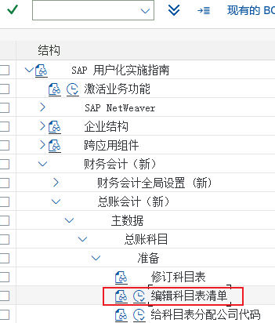
画面 3教材《S4.docx》· FI 任务 02 创建会计科目表 · 原图 01_1_image10.png 财务会计新－总帐会计新－总帐科目－主数据－总账科目-准备－编辑科目表清单按下图进行创建，创建完毕后点击保存按钮

画面 4教材《S4.docx》· FI 任务 02 创建会计科目表 · 原图 02_1_image11.png 原书提示帐目表 A999说明说明 颐宁机械有限公司会计科目表维护语言原书提示成本控制集成 自动创建成本要素
| 输入值（教材画面）：字段 | 值 |
|---|---|
| 总帐科目号长度 | 8 |
定义会计年度变式
解释：会计年度变式将用于后续的财务操作，会计年度变式表明过账期间和特殊期间的数目，即在哪些期间进行过账
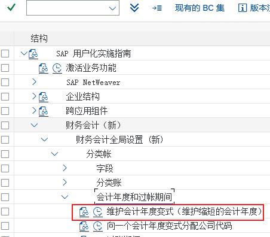
画面 5教材《S4.docx》· FI 任务 03 定义会计年度变式 · 原图 01_1_image12.png 财务会计－财务会计的全局设置－会计年度－分类账－会计年度和过账期间－维护会计年度变式（维护缩短的会计年度）点击新建按钮新条目

画面 6教材《S4.docx》· FI 任务 03 定义会计年度变式 · 原图 02_1_image13.png
创建信贷控制范围
解释：信贷范围用于管理在进行信用控制时，信用在哪个范围内起作用。它是 SAP 销售和应收帐款模块中用于控制信用风险的组织结构.公司代码和信贷控制范围是多对一关系。

画面 7教材《S4.docx》· FI 任务 04 创建信贷控制范围 · 原图 01_1_image14.png 
画面 8教材《S4.docx》· FI 任务 04 创建信贷控制范围 · 原图 02_1_image15.png 原书提示C999 颐宁信贷控制范围原书提示RMB
维护公司代码的全局参数
解释：公司代码全局参数用于设置创建公司的帐目表，信贷控制范围，会计年度变式等。主要输入公司代码的全局参数,把上面的三个组织结构分配给公司代码。

画面 9教材《S4.docx》· FI 任务 05 维护公司代码的全局参数 · 原图 01_1_image16.png 财务会计－财务会计的全局设置－公司代码－输入全局参数

画面 10教材《S4.docx》· FI 任务 05 维护公司代码的全局参数 · 原图 02_1_image17.png 原书提示帐目表 A999公司原书提示国家表/科目财务管理范围原书提示信贷控制范围 C999 会计年度变式 ZF
B 总账科目的准备（科目组 · 字段状态 · 留存收益） 4 个任务
科目体系的三件准备：科目组决定科目本身的字段与编号，字段状态变式决定凭证里辅助核算项的必输/可选/隐藏，留存收益科目决定年结时损益怎么转到资产负债表。
定义科目组及输入控制
解释：用于创建科目组，并进行输入控制，即在输入科目时，哪些字段允许输入，哪些字段隐藏等。科目组是将性质类似的科目分类，主要维护前台会计科目主数据。(统驭科目--字 段状态组--凭证输入)。
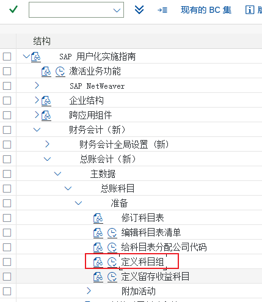
画面 11教材《S4.docx》· FI 任务 06 定义科目组及输入控制 · 原图 01_1_image18.png 财务会计－总帐会计－总帐科目－主数据－准备－定义科目组

画面 12教材《S4.docx》· FI 任务 06 定义科目组及输入控制 · 原图 02_1_image19.png A999 RAA 统驭科目 11300000 21699999
双击 BSA 进入
画面 13教材《S4.docx》· FI 任务 06 定义科目组及输入控制 · 原图 03_1_image20.png 双击科目控制
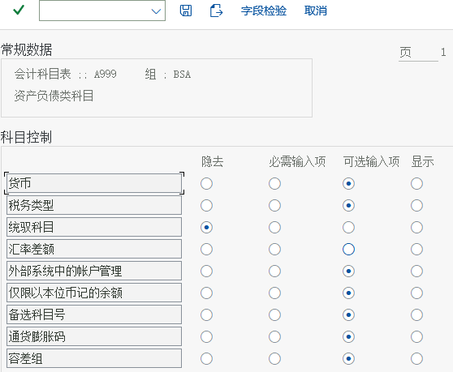
画面 14教材《S4.docx》· FI 任务 06 定义科目组及输入控制 · 原图 04_1_image21.png 双击凭证输入

画面 15教材《S4.docx》· FI 任务 06 定义科目组及输入控制 · 原图 05_1_image22.png 双击进入 PLA

画面 16教材《S4.docx》· FI 任务 06 定义科目组及输入控制 · 原图 06_1_image23.png 进入账户管理
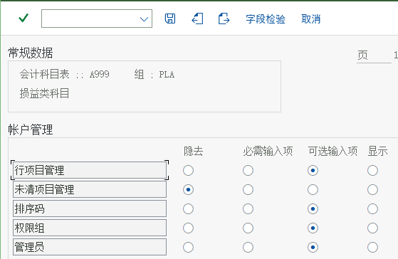
画面 17教材《S4.docx》· FI 任务 06 定义科目组及输入控制 · 原图 07_1_image24.png 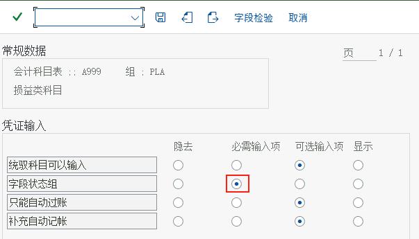
画面 18教材《S4.docx》· FI 任务 06 定义科目组及输入控制 · 原图 08_1_image25.png 进入统驭科目

画面 19教材《S4.docx》· FI 任务 06 定义科目组及输入控制 · 原图 09_1_image26.png
定义字段状态变式
解释：字段状态变式是分配给公司代码的一项重要参数,在字段状态变式中罗列了很多字段状态组,而字段状态组是会计科目中的一个重要参数.它控制在输入一张会计记帐凭证时,该科目的那些辅助核算项目是必须输入的,哪些是不允许输入的,哪些是可以选择的
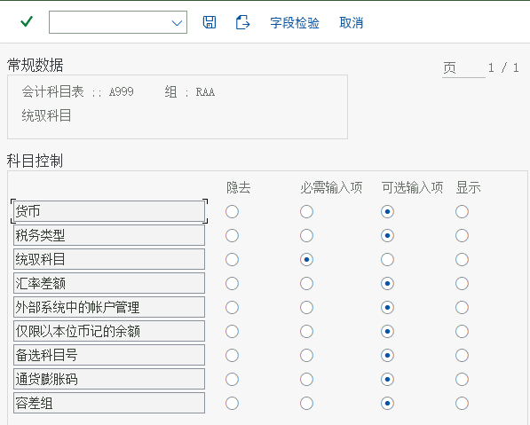
画面 20教材《S4.docx》· FI 任务 07 定义字段状态变式 · 原图 01_1_image27.png 重点:科目组是控制科目中的参数,字段状态组是控制凭证中的辅助核算项

画面 21教材《S4.docx》· FI 任务 07 定义字段状态变式 · 原图 02_1_image28.png 财务会计(新)－财务会计全局设置(新) — 字段－定义字段状态变式
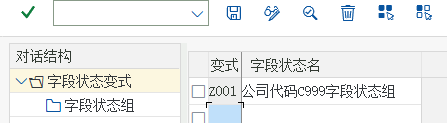
画面 22教材《S4.docx》· FI 任务 07 定义字段状态变式 · 原图 03_1_image29.png Z001 公司代码 C999 字段状态组

画面 23教材《S4.docx》· FI 任务 07 定义字段状态变式 · 原图 04_1_image30.png 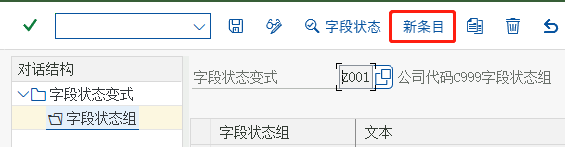
画面 24教材《S4.docx》· FI 任务 07 定义字段状态变式 · 原图 04_2_image31.png 双击字段状态组

画面 25教材《S4.docx》· FI 任务 07 定义字段状态变式 · 原图 05_1_image32.png ZEXP 费用科目
ZGBS 一般资产负债科目 ZMMA 材料采购科目（GR/IR） ZRAA 统驭科目-应收/应付 ZREV 收入科目
画面 26教材《S4.docx》· FI 任务 07 定义字段状态变式 · 原图 06_1_image33.png 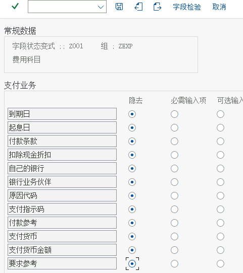
画面 27教材《S4.docx》· FI 任务 07 定义字段状态变式 · 原图 06_2_image34.png 原书提示双击 ZGBS
画面 28教材《S4.docx》· FI 任务 07 定义字段状态变式 · 原图 07_1_image35.png 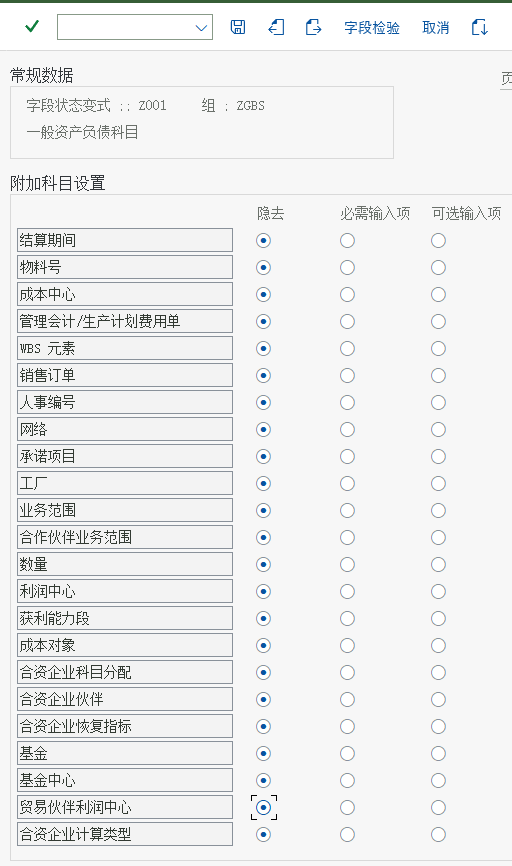
画面 29教材《S4.docx》· FI 任务 07 定义字段状态变式 · 原图 07_2_image36.png 双击ZMMA

画面 30教材《S4.docx》· FI 任务 07 定义字段状态变式 · 原图 08_1_image37.png 
画面 31教材《S4.docx》· FI 任务 07 定义字段状态变式 · 原图 08_2_image38.png 
画面 32教材《S4.docx》· FI 任务 07 定义字段状态变式 · 原图 08_3_image39.png 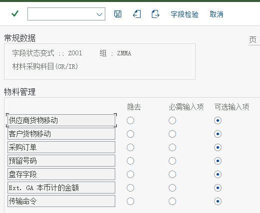
画面 33教材《S4.docx》· FI 任务 07 定义字段状态变式 · 原图 08_4_image40.png 系统会提示“不一致的字段状态，参加帮助文本”回车即可返回

画面 34教材《S4.docx》· FI 任务 07 定义字段状态变式 · 原图 09_1_image43.png 双击 ZREV
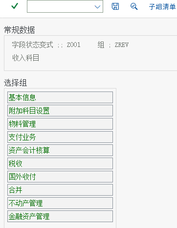
画面 35教材《S4.docx》· FI 任务 07 定义字段状态变式 · 原图 10_1_image44.png 
画面 36教材《S4.docx》· FI 任务 07 定义字段状态变式 · 原图 10_2_image45.png
向字段状态变式分配公司代码
解释:先分配给公司代码,以后可以把字段信息分配给会计科目

画面 37教材《S4.docx》· FI 任务 08 向字段状态变式分配公司代码 · 原图 01_1_image46.png 
画面 38教材《S4.docx》· FI 任务 08 向字段状态变式分配公司代码 · 原图 02_1_image47.png
定义存留收益科目
财务会计(新)－总帐会计(新)－主数据－总帐科目－准备－定义留存收益科目

画面 39教材《S4.docx》· FI 任务 09 定义存留收益科目 · 原图 01_1_image48.png X 410901X 410901

画面 40教材《S4.docx》· FI 任务 09 定义存留收益科目 · 原图 02_1_image49.png 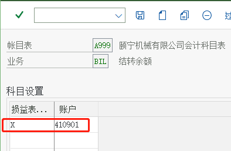
画面 41教材《S4.docx》· FI 任务 09 定义存留收益科目 · 原图 02_2_image50.png 
画面 42教材《S4.docx》· FI 任务 09 定义存留收益科目 · 原图 02_3_image51.png 原书提示系统提示“… 未建立” 回车即可通过
C 总账科目主数据（前台 FS00） 5 个任务
教材在这里从前台建科目：一般资产负债科目、统驭科目（应收 11310101 / 应付 21210101）、材料采购 GR/IR 科目、一批 18 个损益科目，最后用科目汇总清点。任务 13 是全书最长任务（36 步）。
新建一般资产负债科目
FS00事务代码：FS00
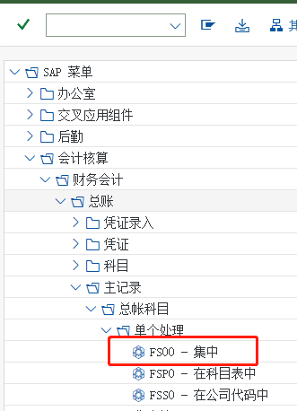
画面 43教材《S4.docx》· FI 任务 10 新建一般资产负债科目 · 原图 01_1_image55.png 
画面 44教材《S4.docx》· FI 任务 10 新建一般资产负债科目 · 原图 02_1_image56.png 原书提示31410101 利润分配－未分配利润原书提示31010101 实收资本
新建统驭科目－应收/应付
FS00其他总账科目创建如现金总账的创建

画面 45教材《S4.docx》· FI 任务 11 新建统驭科目－应收/应付 · 原图 01_1_image57.png 
画面 46教材《S4.docx》· FI 任务 11 新建统驭科目－应收/应付 · 原图 01_2_image58.png 创建应收账款 FS00 11310101

画面 47教材《S4.docx》· FI 任务 11 新建统驭科目－应收/应付 · 原图 02_1_image59.png 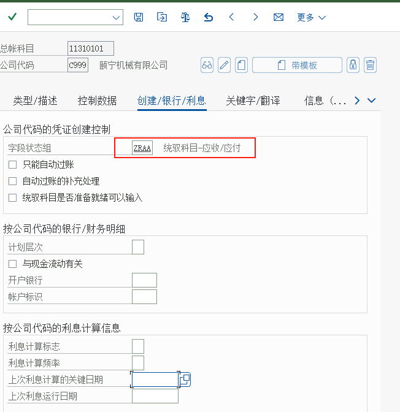
画面 48教材《S4.docx》· FI 任务 11 新建统驭科目－应收/应付 · 原图 02_2_image60.png 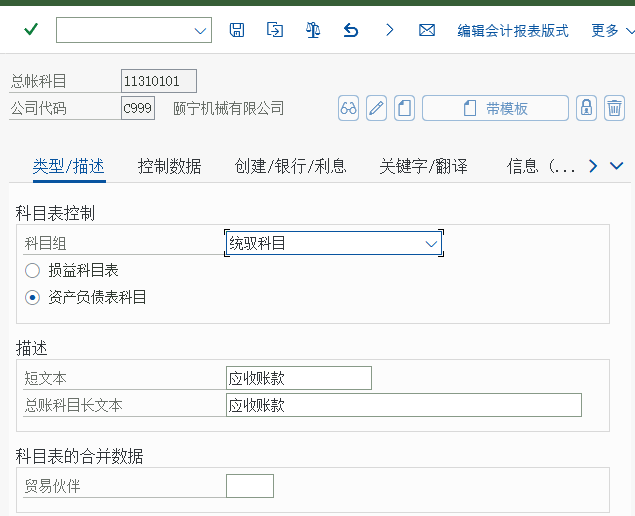
画面 49教材《S4.docx》· FI 任务 11 新建统驭科目－应收/应付 · 原图 02_3_image61.png 创建应付科目
21210101 应付帐款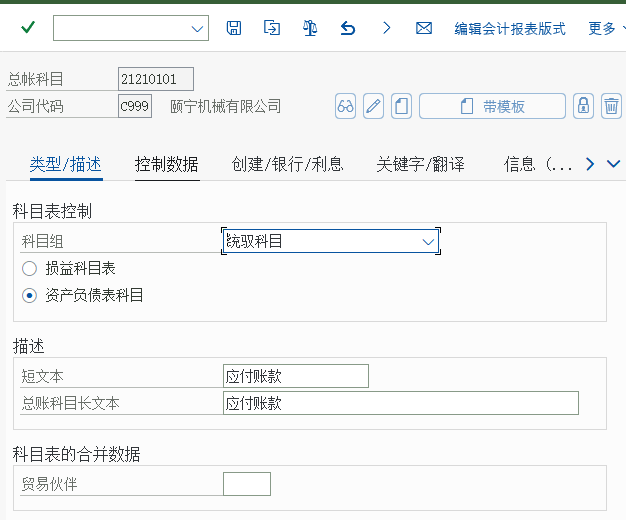
画面 50教材《S4.docx》· FI 任务 11 新建统驭科目－应收/应付 · 原图 03_1_image62.png 
画面 51教材《S4.docx》· FI 任务 11 新建统驭科目－应收/应付 · 原图 03_2_image63.png 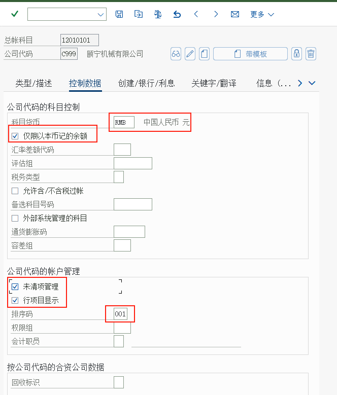
画面 52教材《S4.docx》· FI 任务 11 新建统驭科目－应收/应付 · 原图 03_3_image66.png
| 输入值（教材画面）：字段 | 值 |
|---|---|
| 事务代码 | FS00 |
新建材料采购科目
FS00解释:材料采购科目也是创建一个总账会计科目。这个科目需要"逐笔逐清"的中间过渡科目--材料采购科目。也叫 GR/IR(收货/收发票)。在收货时系统自动生成会计凭证。借:库存 贷:材料采购.而收发票时，系统也自动生成会计凭证。 借:材料采购，贷:应付账款.两边的"材料采购" 凭证行相互匹配的过程叫"清账"，对上的叫"已清项"，对不上的叫"未清项"，未清项反映了货或者发票有一方未到。这是个风险点，其他需要用"清账"来管理的科目大多是一些中间过渡科目，如银行未达科目。或者是反映债权债务(但又不用应付应收模块管理)科目，如长期借款。客户和供应商明细账就是采用清账来管理的。
创建材料采购－GR/IR 科目
画面 53教材《S4.docx》· FI 任务 12 新建材料采购科目 · 原图 01_1_image67.png 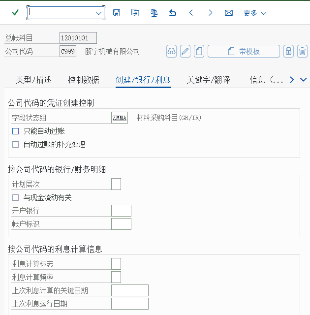
画面 54教材《S4.docx》· FI 任务 12 新建材料采购科目 · 原图 01_2_image68.png 
画面 55教材《S4.docx》· FI 任务 12 新建材料采购科目 · 原图 01_3_image69.png
| 输入值（教材画面）：字段 | 值 |
|---|---|
| 事务代码 | FS00 |
新建损益科目
FS0051010101 主营业务收入-自制产品
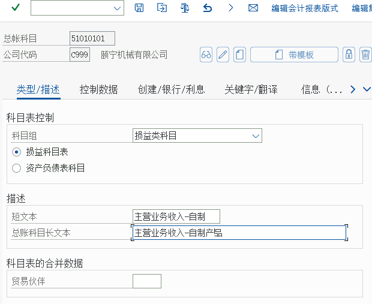
画面 56教材《S4.docx》· FI 任务 13 新建损益科目 · 原图 01_1_image70.png 
画面 57教材《S4.docx》· FI 任务 13 新建损益科目 · 原图 01_2_image71.png 
画面 58教材《S4.docx》· FI 任务 13 新建损益科目 · 原图 01_3_image72.png 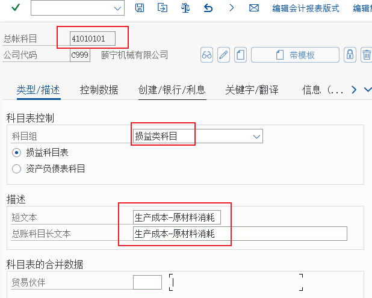
画面 59教材《S4.docx》· FI 任务 13 新建损益科目 · 原图 02_1_image76.png 
画面 60教材《S4.docx》· FI 任务 13 新建损益科目 · 原图 02_2_image77.png 创建生产成本－原材料消耗
41010101
画面 61教材《S4.docx》· FI 任务 13 新建损益科目 · 原图 03_1_image80.png 创建生产成本－订单差异 41010901

画面 62教材《S4.docx》· FI 任务 13 新建损益科目 · 原图 04_1_image81.png 
画面 63教材《S4.docx》· FI 任务 13 新建损益科目 · 原图 04_2_image82.png 
画面 64教材《S4.docx》· FI 任务 13 新建损益科目 · 原图 04_3_image83.png 
画面 65教材《S4.docx》· FI 任务 13 新建损益科目 · 原图 05_1_image87.png 
画面 66教材《S4.docx》· FI 任务 13 新建损益科目 · 原图 05_2_image88.png 
画面 67教材《S4.docx》· FI 任务 13 新建损益科目 · 原图 05_3_image89.png 
画面 68教材《S4.docx》· FI 任务 13 新建损益科目 · 原图 06_1_image93.png 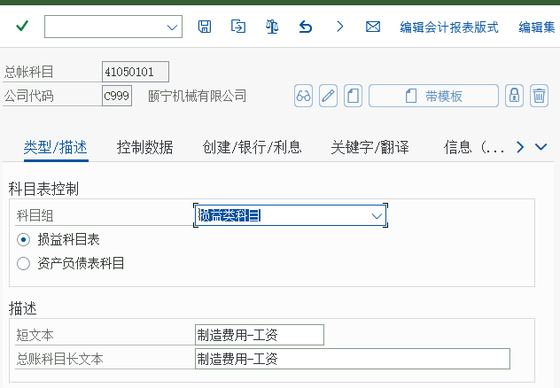
画面 69教材《S4.docx》· FI 任务 13 新建损益科目 · 原图 06_2_image94.png 创建制造费用－工资 41050101

画面 70教材《S4.docx》· FI 任务 13 新建损益科目 · 原图 07_1_image95.png 
画面 71教材《S4.docx》· FI 任务 13 新建损益科目 · 原图 08_1_image96.png 创建制造费用－电费 41050121

画面 72教材《S4.docx》· FI 任务 13 新建损益科目 · 原图 09_1_image97.png 
画面 73教材《S4.docx》· FI 任务 13 新建损益科目 · 原图 09_2_image98.png 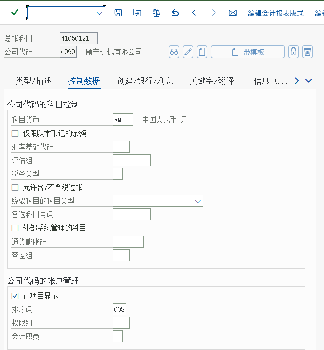
画面 74教材《S4.docx》· FI 任务 13 新建损益科目 · 原图 10_1_image101.png 
画面 75教材《S4.docx》· FI 任务 13 新建损益科目 · 原图 10_2_image102.png 创建主营业务收入－贸易商品 51010201

画面 76教材《S4.docx》· FI 任务 13 新建损益科目 · 原图 11_1_image103.png 
画面 77教材《S4.docx》· FI 任务 13 新建损益科目 · 原图 12_1_image104.png 
画面 78教材《S4.docx》· FI 任务 13 新建损益科目 · 原图 12_2_image105.png 创建主营业务收入－自制产品 54010101

画面 79教材《S4.docx》· FI 任务 13 新建损益科目 · 原图 13_1_image106.png 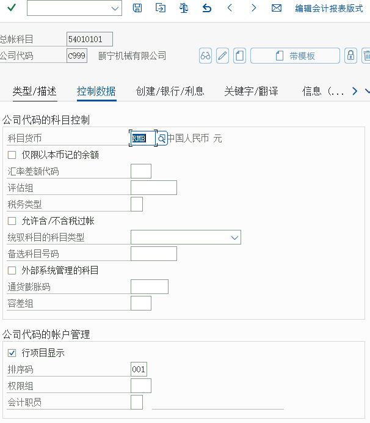
画面 80教材《S4.docx》· FI 任务 13 新建损益科目 · 原图 14_1_image107.png 
画面 81教材《S4.docx》· FI 任务 13 新建损益科目 · 原图 14_2_image108.png 创建主营业务成本－贸易商品 54010201
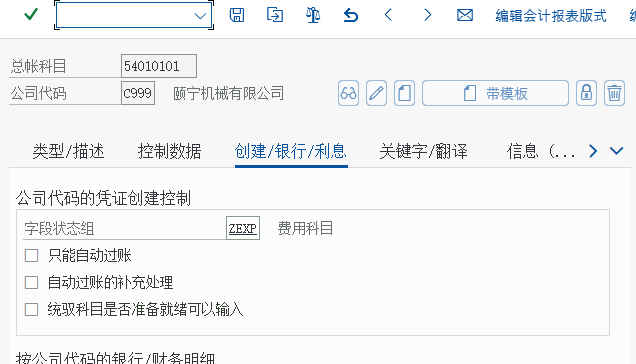
画面 82教材《S4.docx》· FI 任务 13 新建损益科目 · 原图 15_1_image109.png 
画面 83教材《S4.docx》· FI 任务 13 新建损益科目 · 原图 16_1_image110.png 
画面 84教材《S4.docx》· FI 任务 13 新建损益科目 · 原图 16_2_image111.png 创建主营成本－采购价差 54010301
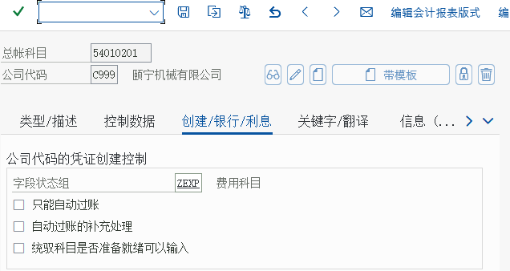
画面 85教材《S4.docx》· FI 任务 13 新建损益科目 · 原图 17_1_image112.png 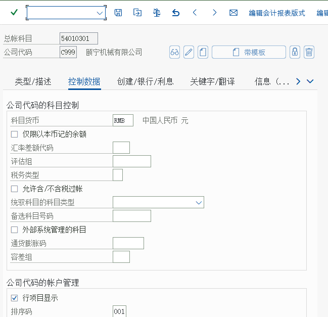
画面 86教材《S4.docx》· FI 任务 13 新建损益科目 · 原图 18_1_image113.png 
画面 87教材《S4.docx》· FI 任务 13 新建损益科目 · 原图 18_2_image114.png 创建主营业务成本－生产订单差异 54010401

画面 88教材《S4.docx》· FI 任务 13 新建损益科目 · 原图 19_1_image115.png 
画面 89教材《S4.docx》· FI 任务 13 新建损益科目 · 原图 20_1_image116.png 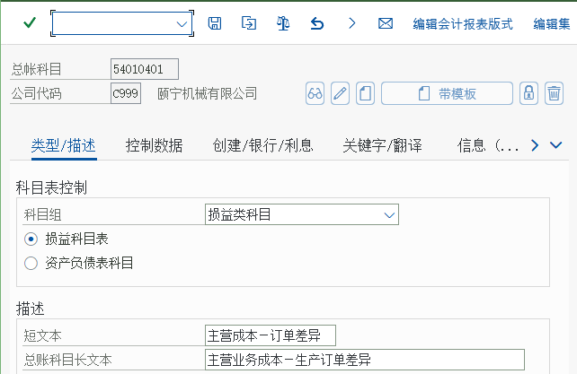
画面 90教材《S4.docx》· FI 任务 13 新建损益科目 · 原图 20_2_image117.png 创建销售费用－运费 55010101

画面 91教材《S4.docx》· FI 任务 13 新建损益科目 · 原图 21_1_image118.png 
画面 92教材《S4.docx》· FI 任务 13 新建损益科目 · 原图 22_1_image119.png 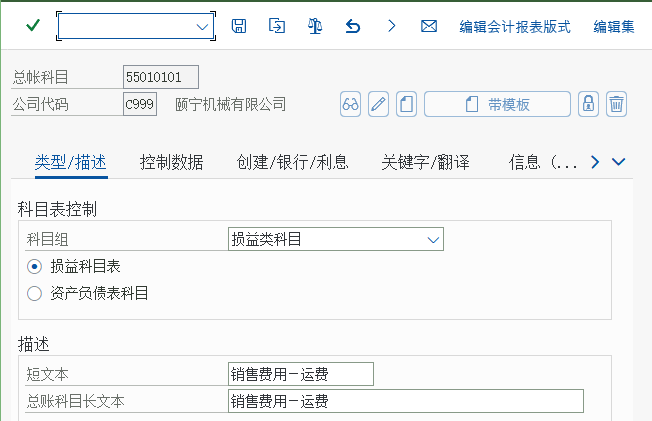
画面 93教材《S4.docx》· FI 任务 13 新建损益科目 · 原图 22_2_image120.png 创建销售费用－市场费用 55010111

画面 94教材《S4.docx》· FI 任务 13 新建损益科目 · 原图 23_1_image121.png 
画面 95教材《S4.docx》· FI 任务 13 新建损益科目 · 原图 24_1_image122.png 
画面 96教材《S4.docx》· FI 任务 13 新建损益科目 · 原图 24_2_image123.png 创建管理费用－工资 55020101

画面 97教材《S4.docx》· FI 任务 13 新建损益科目 · 原图 25_1_image124.png 
画面 98教材《S4.docx》· FI 任务 13 新建损益科目 · 原图 26_1_image125.png 
画面 99教材《S4.docx》· FI 任务 13 新建损益科目 · 原图 26_2_image126.png 创建管理费用－折旧 55020111

画面 100教材《S4.docx》· FI 任务 13 新建损益科目 · 原图 27_1_image127.png 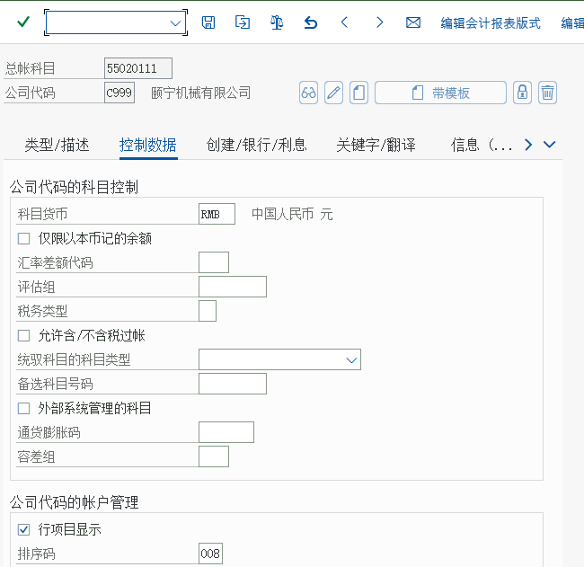
画面 101教材《S4.docx》· FI 任务 13 新建损益科目 · 原图 28_1_image128.png 
画面 102教材《S4.docx》· FI 任务 13 新建损益科目 · 原图 28_2_image129.png 创建管理费用－电话费 55020121

画面 103教材《S4.docx》· FI 任务 13 新建损益科目 · 原图 29_1_image130.png 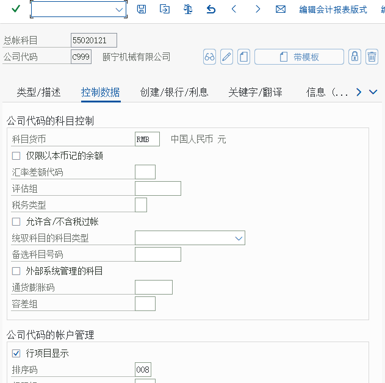
画面 104教材《S4.docx》· FI 任务 13 新建损益科目 · 原图 30_1_image131.png 
画面 105教材《S4.docx》· FI 任务 13 新建损益科目 · 原图 30_2_image132.png 创建管理费用－办公用品 55020131

画面 106教材《S4.docx》· FI 任务 13 新建损益科目 · 原图 31_1_image133.png 
画面 107教材《S4.docx》· FI 任务 13 新建损益科目 · 原图 32_1_image134.png 
画面 108教材《S4.docx》· FI 任务 13 新建损益科目 · 原图 32_2_image135.png 创建管理费用－租金 55020141
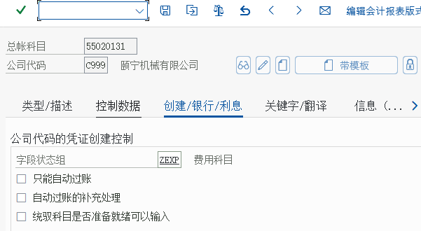
画面 109教材《S4.docx》· FI 任务 13 新建损益科目 · 原图 33_1_image136.png 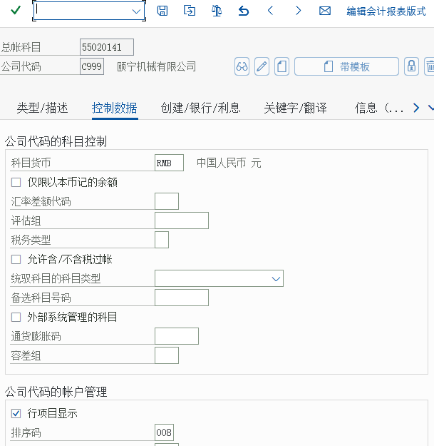
画面 110教材《S4.docx》· FI 任务 13 新建损益科目 · 原图 34_1_image137.png 
画面 111教材《S4.docx》· FI 任务 13 新建损益科目 · 原图 34_2_image138.png 创建管理费用－其他 55029101

画面 112教材《S4.docx》· FI 任务 13 新建损益科目 · 原图 35_1_image139.png 
画面 113教材《S4.docx》· FI 任务 13 新建损益科目 · 原图 36_1_image140.png 
画面 114教材《S4.docx》· FI 任务 13 新建损益科目 · 原图 36_2_image141.png
| 输入值（教材画面）：字段 | 值 |
|---|---|
| 事务代码 | FS00 |
显示科目汇总
解释：创建上述步骤中创建的会计科目

画面 115教材《S4.docx》· FI 任务 14 显示科目汇总 · 原图 01_1_image143.png 原书提示S_alr_87012326
D 凭证控制与记账期间 5 个任务
凭证能不能录、能不能过、什么时候不能过：凭证号码范围复制到 C999 → 记账期间变式 P999 → 分配给公司代码 → 前台开关期间 → 雇员容差组。
复制凭证号码范围到公司代码
财务会计(新)－财务会计全局设置(新)－凭证－凭证号范围－复制到公司代码

画面 116教材《S4.docx》· FI 任务 15 复制凭证号码范围到公司代码 · 原图 01_1_image144.png 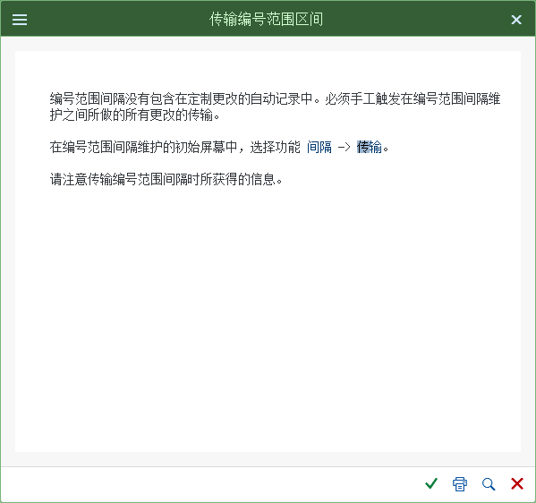
画面 117教材《S4.docx》· FI 任务 15 复制凭证号码范围到公司代码 · 原图 01_2_image145.png 解释：SAP 中对于凭证等需号码的单据，均需要用号码范围来进行管理。通常号码范围设置好之后即可分配到各自使用的范围内。
输入源公司(0001)及目标公司(C999)
画面 118教材《S4.docx》· FI 任务 15 复制凭证号码范围到公司代码 · 原图 02_1_image146.png 点击是

画面 119教材《S4.docx》· FI 任务 15 复制凭证号码范围到公司代码 · 原图 03_1_image147.png 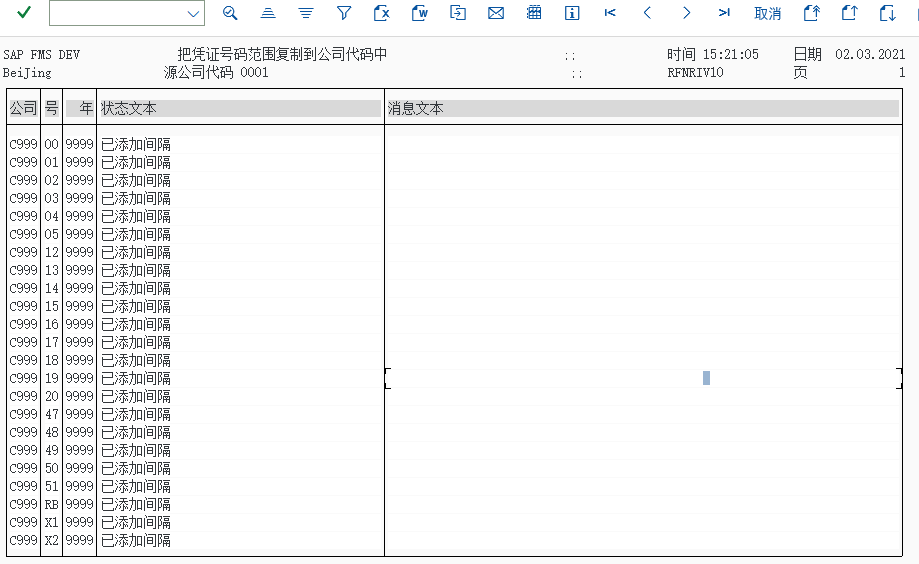
画面 120教材《S4.docx》· FI 任务 15 复制凭证号码范围到公司代码 · 原图 04_1_image148.png
定义记帐期间变式
财务会计(新)－财务会计全局设置(新)－分类账－会计年度和过账期间－过账期间-定义未清过账期间变式

画面 121教材《S4.docx》· FI 任务 16 定义记帐期间变式 · 原图 01_1_image149.png 
画面 122教材《S4.docx》· FI 任务 16 定义记帐期间变式 · 原图 01_2_image150.png 注意解释：这是用来对凭证的开关。已经关掉的会计期间就不允许对凭证进行更改。多个公司代码可以被统一控制开账和关帐。先给各个公司代码赋予记账期间变式参数。原书提示P999 颐宁记账期间变式
将记帐期间变式分配给公司代码
教材小节：财务会计(新)－财务会计全局设置(新)－分类账－会计年度和过账期间－过账期间-将变式分配给公司代码

画面 123教材《S4.docx》· FI 任务 17 将记帐期间变式分配给公司代码 · 原图 01_1_image151.png 
画面 124教材《S4.docx》· FI 任务 17 将记帐期间变式分配给公司代码 · 原图 01_2_image152.png 原书提示P999
设置记帐期间(前台)
解释:完成开帐和关帐，通常作为月结的一个环节。
会计核算－财务会计－总帐－环境－当前设置－未清过帐期间和已结过帐期间
画面 125教材《S4.docx》· FI 任务 18 设置记帐期间(前台) · 原图 01_1_image153.png 
画面 126教材《S4.docx》· FI 任务 18 设置记帐期间(前台) · 原图 01_2_image154.png P999 +/A/D/K/S 1-12 期间 2006 年 13－16 期间，+/A/D/K/S 分别代表如下含义

画面 127教材《S4.docx》· FI 任务 18 设置记帐期间(前台) · 原图 02_1_image155.png 
画面 128教材《S4.docx》· FI 任务 18 设置记帐期间(前台) · 原图 02_2_image156.png
定义过帐容差组
财务会计(新)－财务会计的全局设置(新)－凭证－容差组－定义雇员的容差组
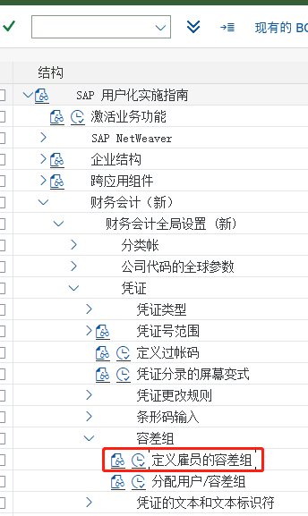
画面 129教材《S4.docx》· FI 任务 19 定义过帐容差组 · 原图 01_1_image157.png 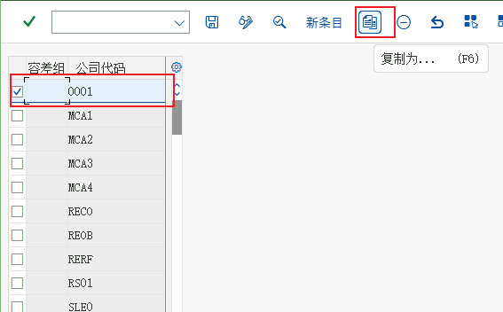
画面 130教材《S4.docx》· FI 任务 19 定义过帐容差组 · 原图 01_2_image158.png 单笔未清项(如发票)的金额不能超过多少。我们把这些条件设置在容差组里,再给会计人员分配容差组
复制一条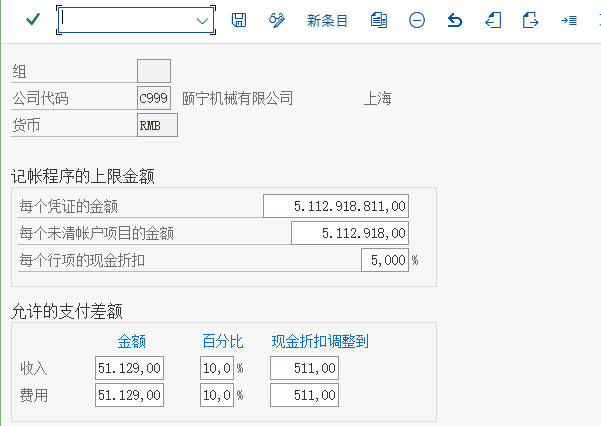
画面 131教材《S4.docx》· FI 任务 19 定义过帐容差组 · 原图 02_1_image159.png
E 总账凭证与余额 2 个任务
第一次真正记账：FB50 录实收资本凭证（借 10020101 / 贷 31010101），再用 FS10N 看科目余额；任务 21 后半段顺带把自动税务过账（销项税 MWS → 21710102）配掉。
输入总帐科目凭证
FB50FB03解释:：在总帐中输入会计凭证，记录我们收到 2 800 000 的实收资本，存入工商银行账户。事务代码 FB50

画面 132教材《S4.docx》· FI 任务 20 输入总帐科目凭证 · 原图 01_1_image160.png 10020101 31010101
输入不同公司的凭证可点击公司代码按钮
画面 133教材《S4.docx》· FI 任务 20 输入总帐科目凭证 · 原图 02_1_image161.png 
画面 134教材《S4.docx》· FI 任务 20 输入总帐科目凭证 · 原图 03_1_image162.png 可预制，也可以直接保存后过账（下图为FB03查询得到的结果）

画面 135教材《S4.docx》· FI 任务 20 输入总帐科目凭证 · 原图 04_1_image163.png
显示总帐科目余额
FS10N事务代码 FS10N

画面 136教材《S4.docx》· FI 任务 21 显示总帐科目余额 · 原图 01_1_image164.png 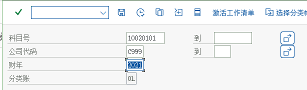
画面 137教材《S4.docx》· FI 任务 21 显示总帐科目余额 · 原图 01_2_image165.png 
画面 138教材《S4.docx》· FI 任务 21 显示总帐科目余额 · 原图 02_1_image166.png 1、 维护自动税收过帐

画面 139教材《S4.docx》· FI 任务 21 显示总帐科目余额 · 原图 03_1_image167.png 定义销项税
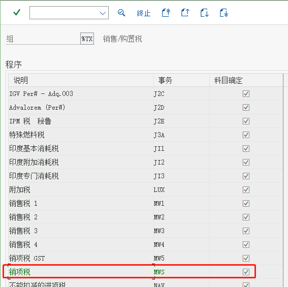
画面 140教材《S4.docx》· FI 任务 21 显示总帐科目余额 · 原图 04_1_image168.png 双击销项税，定义销项税

画面 141教材《S4.docx》· FI 任务 21 显示总帐科目余额 · 原图 05_1_image169.png 
画面 142教材《S4.docx》· FI 任务 21 显示总帐科目余额 · 原图 05_2_image170.png 点击保存按钮，输入 21710102
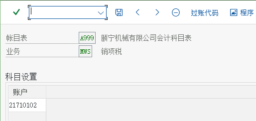
画面 143教材《S4.docx》· FI 任务 21 显示总帐科目余额 · 原图 06_1_image171.png 
画面 144教材《S4.docx》· FI 任务 21 显示总帐科目余额 · 原图 07_1_image172.png 
画面 145教材《S4.docx》· FI 任务 21 显示总帐科目余额 · 原图 07_2_image173.png 
画面 146教材《S4.docx》· FI 任务 21 显示总帐科目余额 · 原图 07_3_image174.png
| 输入值（教材画面）：字段 | 值 |
|---|---|
| 定义进项税 | 21710101 |
F 应收应付的主数据准备 7 个任务
业务伙伴上场的准备：容差组、供应商账户组 G001–G003 与编号范围 Z2/Z3、客户账户组 K001/K002 与编号范围 Z1/Z2，最后把编号范围分配给账户组。
定义应收应付容差组
解释：对于和客户或供应商的收付业务，我们可以定义一些控制条件。比如对某类客户的收款差异不能超过 100 元，或发票的 0.1%等。容差组是分配给每个客户和供应商的主数据。
财务会计(新)－应收账目和应付账目－业务交易－对外支付－付款－手工对外支付－定义容差组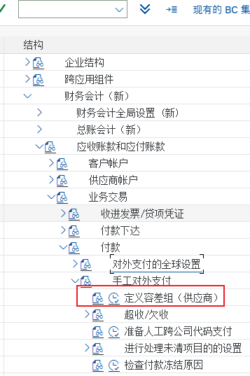
画面 147教材《S4.docx》· FI 任务 22 定义应收应付容差组 · 原图 01_1_image175.png 复制 0001 的

画面 148教材《S4.docx》· FI 任务 22 定义应收应付容差组 · 原图 02_1_image176.png 
画面 149教材《S4.docx》· FI 任务 22 定义应收应付容差组 · 原图 02_2_image177.png
定义供应商账号组

画面 150教材《S4.docx》· FI 任务 23 定义供应商账号组 · 原图 01_1_image178.png 
画面 151教材《S4.docx》· FI 任务 23 定义供应商账号组 · 原图 01_2_image179.png G001组 原材料，对其设置 G002组 贸易商品供应商 G003组 费用供应商
财务会计－应收账目和应付账目－供应商账号－主数据－供应商主数据创建准备－定义带有屏幕格式的账户组（供应商）
画面 152教材《S4.docx》· FI 任务 23 定义供应商账号组 · 原图 02_1_image182.png 双击基础数据

画面 153教材《S4.docx》· FI 任务 23 定义供应商账号组 · 原图 03_1_image183.png 双击地址

画面 154教材《S4.docx》· FI 任务 23 定义供应商账号组 · 原图 04_1_image184.png 双击公司代码数据

画面 155教材《S4.docx》· FI 任务 23 定义供应商账号组 · 原图 05_1_image185.png 双击账户管理

画面 156教材《S4.docx》· FI 任务 23 定义供应商账号组 · 原图 06_1_image186.png 双击支付交易
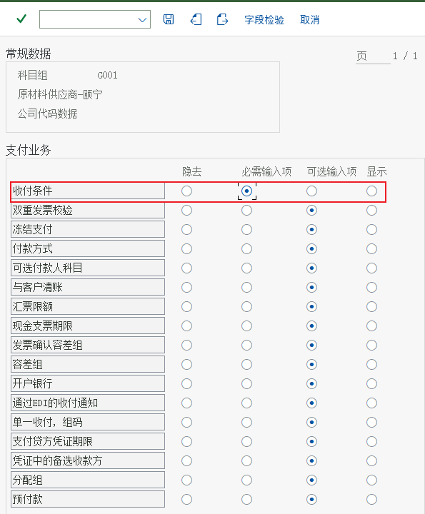
画面 157教材《S4.docx》· FI 任务 23 定义供应商账号组 · 原图 07_1_image187.png 原书提示同理创建其他的组（复制方式创建）拷贝 G002 G003

画面 158教材《S4.docx》· FI 任务 23 定义供应商账号组 · 原图 08_1_image188.png
定义供应商账户编号范围
财务会计－应收账目和应付账目－供应商账户－主数据－供应商主记录创建准备－创建供应商账户编号范围
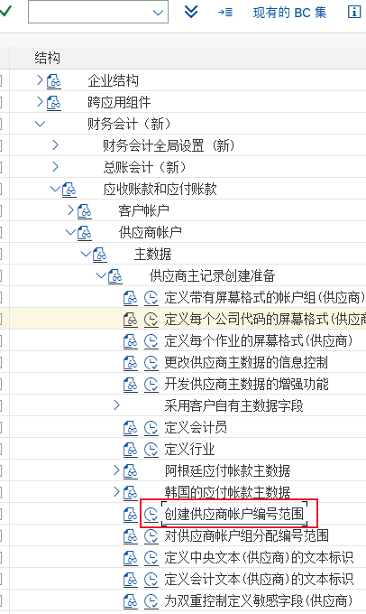
画面 159教材《S4.docx》· FI 任务 24 定义供应商账户编号范围 · 原图 01_1_image189.png 
画面 160教材《S4.docx》· FI 任务 24 定义供应商账户编号范围 · 原图 02_1_image190.png 
画面 161教材《S4.docx》· FI 任务 24 定义供应商账户编号范围 · 原图 02_2_image191.png 
画面 162教材《S4.docx》· FI 任务 24 定义供应商账户编号范围 · 原图 03_1_image192.png Z2 20000000 29999999
Z3 30000000 39999999
画面 163教材《S4.docx》· FI 任务 24 定义供应商账户编号范围 · 原图 04_1_image193.png 
画面 164教材《S4.docx》· FI 任务 24 定义供应商账户编号范围 · 原图 05_1_image194.png
分配供应商编号范围
财务会计－应收账目和应付账目－供应商账户－主数据－供应商主记录创建准备－供应商账户组分配编号范围

画面 165教材《S4.docx》· FI 任务 25 分配供应商编号范围 · 原图 01_1_image195.png 
画面 166教材《S4.docx》· FI 任务 25 分配供应商编号范围 · 原图 01_2_image196.png
定义客户账户组
财务会计(新)－应收账款和应付账款－客户账户－主数据－创建客户主记录准备－定义带有格式的账户组（客户）
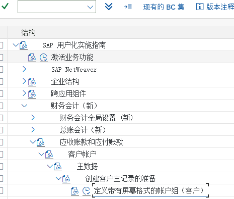
画面 167教材《S4.docx》· FI 任务 26 定义客户账户组 · 原图 01_1_image197.png 创建新条目
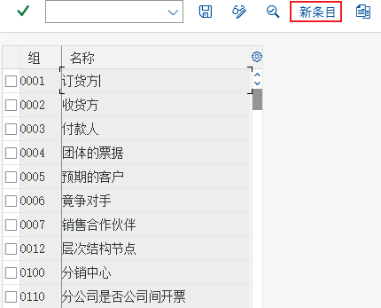
画面 168教材《S4.docx》· FI 任务 26 定义客户账户组 · 原图 02_1_image198.png K001 订货方-颐宁
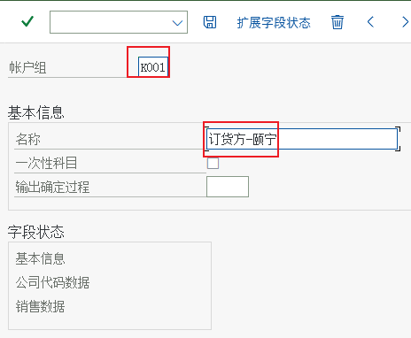
画面 169教材《S4.docx》· FI 任务 26 定义客户账户组 · 原图 03_1_image199.png 双击基本信息

画面 170教材《S4.docx》· FI 任务 26 定义客户账户组 · 原图 04_1_image200.png 原书提示双击地址
画面 171教材《S4.docx》· FI 任务 26 定义客户账户组 · 原图 05_1_image201.png 拷贝 K001
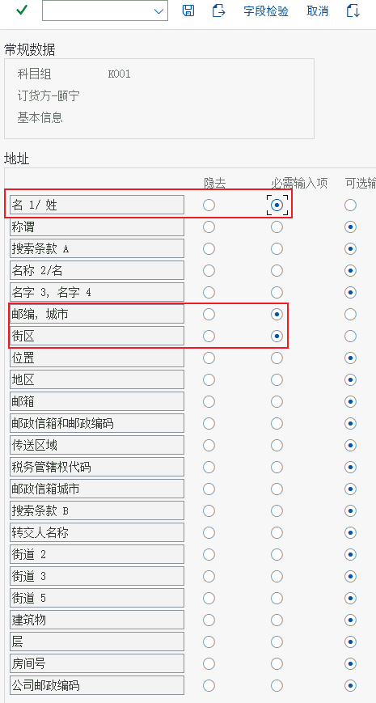
画面 172教材《S4.docx》· FI 任务 26 定义客户账户组 · 原图 06_1_image202.png 
画面 173教材《S4.docx》· FI 任务 26 定义客户账户组 · 原图 06_2_image203.png 
画面 174教材《S4.docx》· FI 任务 26 定义客户账户组 · 原图 06_3_image204.png K002 收货方-颐宁
退回后，双击公司代码数据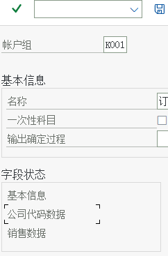
画面 175教材《S4.docx》· FI 任务 26 定义客户账户组 · 原图 07_1_image205.png 双击账户管理
画面 176教材《S4.docx》· FI 任务 26 定义客户账户组 · 原图 08_1_image206.png
定义客户账户编号

分配客户编号范围
财务会计(新)－应收账款和应付账款－客户账户－主数据－创建客户主记录准备－分配客户账户编号范围

画面 182教材《S4.docx》· FI 任务 28 分配客户编号范围 · 原图 01_1_image212.png 
画面 183教材《S4.docx》· FI 任务 28 分配客户编号范围 · 原图 01_2_image213.png
G 客户与供应商主数据（前台） 3 个任务
FD01 建订货方（远东造船厂等，统驭科目 11310101 排序码 001）、建收货方（远东造船厂第三分公司 20000000）、FK01 建六个供应商（红星轴承厂 10000000 … 京通运输公司 30000002）。
新建订货方主数据
FD01建立三个客户:远东造船长, 新益汽轮机场.威力工贸公司 事务代码 FD01

画面 184教材《S4.docx》· FI 任务 29 新建订货方主数据 · 原图 01_1_image214.png 
画面 185教材《S4.docx》· FI 任务 29 新建订货方主数据 · 原图 01_2_image215.png 
画面 186教材《S4.docx》· FI 任务 29 新建订货方主数据 · 原图 01_3_image216.png 统驭科目 11310101 排序码 001

画面 187教材《S4.docx》· FI 任务 29 新建订货方主数据 · 原图 02_1_image219.png 
画面 188教材《S4.docx》· FI 任务 29 新建订货方主数据 · 原图 02_2_image220.png 远东造船厂

画面 189教材《S4.docx》· FI 任务 29 新建订货方主数据 · 原图 03_1_image221.png 画面 190教材《S4.docx》· FI 任务 29 新建订货方主数据 · 原图 04_1_image222.png
| 输入值（教材画面）：字段 | 值 |
|---|---|
| 再创建一个威力国贸公司 | 100000002 |
新建收货方主数据
FD01新建供应商主数据
FK01贸易商品供应商--思普机械设备进出口有限公司 费用供应商---上海市电力公司，佳音房地产有限公司，京通运输公司
FK01
画面 191教材《S4.docx》· FI 任务 31 新建供应商主数据 · 原图 01_1_image223.png 画面 192教材《S4.docx》· FI 任务 31 新建供应商主数据 · 原图 01_2_image224.png 画面 193教材《S4.docx》· FI 任务 31 新建供应商主数据 · 原图 01_3_image225.png 原书提示红星：10000000 长平铁工厂：10000001思普机械设备进出口有限公司：20000000原书提示上海电力:30000000 佳音地产公司：30000001 京通运输公司：30000002
H 应收账款循环 5 个任务
开票 → 收款 → 清账 → 看余额：FB70 客户发票 58.000、F-28 全额收款、部分收款与「剩余项目」、客户余额报表 s_alr_87012172、FD10N 客户余额。
输入客户发票
FB70卖给远东造船厂一批货物，含税销售额 58000 需要录入相应的会计凭证
FB70
画面 194教材《S4.docx》· FI 任务 32 输入客户发票 · 原图 01_1_image229.png 
画面 195教材《S4.docx》· FI 任务 32 输入客户发票 · 原图 01_2_image230.png 原书提示模拟
画面 196教材《S4.docx》· FI 任务 32 输入客户发票 · 原图 02_1_image231.png
收到客户全额还款

画面 197教材《S4.docx》· FI 任务 33 收到客户全额还款 · 原图 01_1_image232.png 解释：全额则只需要清账,而部分还款则需要先清掉原来的帐单,再把剩余的金额生成另外一张单
会计－财务会计－应收帐款－凭证输入－F-28 收款
画面 198教材《S4.docx》· FI 任务 33 收到客户全额还款 · 原图 02_1_image233.png 
画面 199教材《S4.docx》· FI 任务 33 收到客户全额还款 · 原图 02_2_image234.png 模拟

画面 200教材《S4.docx》· FI 任务 33 收到客户全额还款 · 原图 03_1_image235.png 
画面 201教材《S4.docx》· FI 任务 33 收到客户全额还款 · 原图 04_1_image236.png
收到客户部分还款
FB70
画面 202教材《S4.docx》· FI 任务 34 收到客户部分还款 · 原图 01_1_image237.png 
画面 203教材《S4.docx》· FI 任务 34 收到客户部分还款 · 原图 02_1_image238.png 
画面 204教材《S4.docx》· FI 任务 34 收到客户部分还款 · 原图 03_1_image239.png 原书提示点击剩余项目光标放到剩余项，双击

画面 205教材《S4.docx》· FI 任务 34 收到客户部分还款 · 原图 04_1_image240.png 模拟

画面 206教材《S4.docx》· FI 任务 34 收到客户部分还款 · 原图 05_1_image241.png 双击凭证 002 行

画面 207教材《S4.docx》· FI 任务 34 收到客户部分还款 · 原图 06_1_image242.png 
画面 208教材《S4.docx》· FI 任务 34 收到客户部分还款 · 原图 06_2_image243.png 原书提示返回后保存
显示应收帐款余额
会计－财务会计－应收帐款－信息系统－应收帐款会计核算报表－客户余额—s_alr_87012172

画面 209教材《S4.docx》· FI 任务 35 显示应收帐款余额 · 原图 01_1_image244.png 
画面 210教材《S4.docx》· FI 任务 35 显示应收帐款余额 · 原图 01_2_image245.png
显示客户余额
FD10N会计－财务会计－应收帐款－账户－FD10N

画面 211教材《S4.docx》· FI 任务 36 显示客户余额 · 原图 01_1_image249.png 
画面 212教材《S4.docx》· FI 任务 36 显示客户余额 · 原图 02_1_image250.png
I 应付账款循环 5 个任务
供应商侧：FB60 收供应商发票 → 模拟检查 → F-53 付款 5.600,00 → 应付报表 s_alr_87012082 → FK10N 逐行看未清项。
收到供应商发票
FB60会计－财务会计－应付帐款－凭证输入－FB60 发票

画面 213教材《S4.docx》· FI 任务 37 收到供应商发票 · 原图 01_1_image251.png 
画面 214教材《S4.docx》· FI 任务 37 收到供应商发票 · 原图 01_2_image252.png 
画面 215教材《S4.docx》· FI 任务 37 收到供应商发票 · 原图 01_3_image255.png
模拟

画面 216教材《S4.docx》· FI 任务 38 模拟 · 原图 01_1_image257.png
向供应商付款
会计－财务会计－应付帐款－凭证输入－付款－F-53 过帐

画面 217教材《S4.docx》· FI 任务 39 向供应商付款 · 原图 01_1_image258.png 
画面 218教材《S4.docx》· FI 任务 39 向供应商付款 · 原图 02_1_image259.png 
画面 219教材《S4.docx》· FI 任务 39 向供应商付款 · 原图 03_1_image260.png 原书提示模拟
显示应付帐款余额

画面 220教材《S4.docx》· FI 任务 40 显示应付帐款余额 · 原图 01_1_image261.png 
画面 221教材《S4.docx》· FI 任务 40 显示应付帐款余额 · 原图 01_2_image262.png 
画面 222教材《S4.docx》· FI 任务 40 显示应付帐款余额 · 原图 01_3_image263.png
显示供应商余额
FK10N会计－财务会计－应付帐款－账户－FK10N－显示余额

画面 223教材《S4.docx》· FI 任务 41 显示供应商余额 · 原图 01_1_image264.png 
画面 224教材《S4.docx》· FI 任务 41 显示供应商余额 · 原图 02_1_image265.png 
画面 225教材《S4.docx》· FI 任务 41 显示供应商余额 · 原图 02_2_image266.png 
画面 226教材《S4.docx》· FI 任务 41 显示供应商余额 · 原图 03_1_image269.png 
画面 227教材《S4.docx》· FI 任务 41 显示供应商余额 · 原图 04_1_image270.png 原书提示双击第3行的行项目
J 报表与期末 4 个任务
把账变成报表：科目余额表 S_ALR_87012276 → 收入科目设为「只能自动记帐」→ 定义会计报表版本（报表项目 + 科目范围）→ 运行资产负债表（资产 223.680 / 权益 223.680）。
总帐科目余额汇总表
会计－财务会计－总帐－信息系统－总帐报表(新)－科目余额－常规－总帐科目余额－

画面 228教材《S4.docx》· FI 任务 42 总帐科目余额汇总表 · 原图 01_1_image271.png 
画面 229教材《S4.docx》· FI 任务 42 总帐科目余额汇总表 · 原图 01_2_image272.png 
画面 230教材《S4.docx》· FI 任务 42 总帐科目余额汇总表 · 原图 02_1_image275.png
将收入科目设置为只能自动记帐
FS00
画面 231教材《S4.docx》· FI 任务 43 将收入科目设置为只能自动记帐 · 原图 01_1_image276.png


定义资产负债表和损益表结构
财务会计－总帐会计－业务往来－结算－编制凭证－定义会计报表版本

画面 235教材《S4.docx》· FI 任务 44 定义资产负债表和损益表结构 · 原图 01_1_image283.png 
画面 236教材《S4.docx》· FI 任务 44 定义资产负债表和损益表结构 · 原图 02_1_image284.png 新的分录

画面 237教材《S4.docx》· FI 任务 44 定义资产负债表和损益表结构 · 原图 03_1_image285.png 点击会计报表项目

画面 238教材《S4.docx》· FI 任务 44 定义资产负债表和损益表结构 · 原图 04_1_image286.png 
画面 239教材《S4.docx》· FI 任务 44 定义资产负债表和损益表结构 · 原图 04_2_image287.png 原书提示双击资产
画面 240教材《S4.docx》· FI 任务 44 定义资产负债表和损益表结构 · 原图 05_1_image288.png 填写如下：

画面 241教材《S4.docx》· FI 任务 44 定义资产负债表和损益表结构 · 原图 06_1_image289.png 选择颐宁公司财务报表版本，点击创建项目 8 损益及利润分配表
画面 242教材《S4.docx》· FI 任务 44 定义资产负债表和损益表结构 · 原图 07_1_image290.png 选中资产，点击创建项目
15 固定资产
18 无形及递延资产
画面 245教材《S4.docx》· FI 任务 44 定义资产负债表和损益表结构 · 原图 09_1_image295.png 原书提示21 负债选中负债及所有者权益，点击创建项目
100101 现金
100201 银行存款画面 248教材《S4.docx》· FI 任务 44 定义资产负债表和损益表结构 · 原图 11_1_image298.png 原书提示2101 流动负债21710101 未交增值税-进项税额
21710102 未交增值税-销项税额
画面 249教材《S4.docx》· FI 任务 44 定义资产负债表和损益表结构 · 原图 12_1_image299.png 3141 期初未分配利润
3142 本年净增未分配利润
画面 250教材《S4.docx》· FI 任务 44 定义资产负债表和损益表结构 · 原图 13_1_image300.png 选中净值结果：亏损，调整到 3142 下

画面 253教材《S4.docx》· FI 任务 44 定义资产负债表和损益表结构 · 原图 15_1_image303.png 净值结果：利润和亏损两个系统预定义的报表项目会自动计算资产负债表的轧差数，实质上就是本年净增（或净减）的未分配利润数

画面 254教材《S4.docx》· FI 任务 44 定义资产负债表和损益表结构 · 原图 16_1_image304.png 原书提示P&L 结果也是系统预定义的报表项目，它自动计算损益表和利润分配表的轧差数，实质上也是“本年净增未分配利润”。画面 255教材《S4.docx》· FI 任务 44 定义资产负债表和损益表结构 · 原图 16_1_image304.png 原书提示510101 主营业务利润-自制画面 256教材《S4.docx》· FI 任务 44 定义资产负债表和损益表结构 · 原图 18_1_image305.png 10010101 10019999
D 指如果科目余额在借方，就归入这个报表项目画面 257教材《S4.docx》· FI 任务 44 定义资产负债表和损益表结构 · 原图 19_1_image306.png 1 资产 资产
画面 258教材《S4.docx》· FI 任务 44 定义资产负债表和损益表结构 · 原图 20_1_image307.png 原书提示A999 0010010101 - 0010019999 X X124301 存货-产成品
A9990012430101 - 0012439999 X X
画面 259教材《S4.docx》· FI 任务 44 定义资产负债表和损益表结构 · 原图 21_1_image308.png 原书提示212101 应付账款3142 本年净增未分配利润
7 净值结果：亏损 净值结果：亏损
画面 260教材《S4.docx》· FI 任务 44 定义资产负债表和损益表结构 · 原图 22_1_image309.png 原书提示540103 主营业务成本-差异结算59 本年净增未分配利润
6 P+L P＋L 结果画面 261教材《S4.docx》· FI 任务 44 定义资产负债表和损益表结构 · 原图 23_1_image310.png


{kind=link}
{kind=link}
{kind=link}
{kind=link}
{kind=link}
{kind=link}
{kind=link}
{kind=link}
{kind=link}
{kind=link}
{kind=link}
{kind=link}
{kind=link}
{kind=link}
{kind=link}
{kind=link}
{kind=link}
{kind=link}
{kind=link}
{kind=link}
{kind=link}
{kind=link}
{kind=link}
{kind=link}
{kind=link}
{kind=link}
{kind=link}
{kind=link}
{kind=link}
{kind=link}
{kind=link}
{kind=link}
{kind=link}
{kind=link}
{kind=link}
{kind=link}
{kind=link}
{kind=link}
{kind=link}
{kind=link}
{kind=link}
{kind=link}
{kind=link}
{kind=link}
{kind=link}
{kind=link}
{kind=link}
{kind=link}
{kind=link}
{kind=link}
{kind=link}
{kind=link}
{kind=link}
{kind=link}
{kind=link}
{kind=link}
{kind=link}
{kind=link}
{kind=link}
{kind=link}
{kind=link}
{kind=link}
{kind=link}
{kind=link}
{kind=link}
{kind=link}
{kind=link}
{kind=link}
{kind=link}
运行资产负债表

画面 262教材《S4.docx》· FI 任务 45 运行资产负债表 · 原图 01_1_image311.png 
画面 263教材《S4.docx》· FI 任务 45 运行资产负债表 · 原图 02_1_image312.png 10 代表本位币

画面 264教材《S4.docx》· FI 任务 45 运行资产负债表 · 原图 03_1_image313.png
任务 30 补充：收货方（Ship-to Party）主数据
- 事务码
FD01（或从菜单 会计 → 财务会计 → 应收账款 → 主记录 → 创建），输入账户组K002（教材任务 26 建的「收货方-颐宁」）与公司代码C999，回车。 - 一般数据：名称填「远东造船厂第三分公司」，地址与通信方式按实际填写；如果这条记录是「一址多角色」，也可以直接参照已有客户 10000000 复制。
- 一般数据（续）：输入时系统按账户组 K002 的屏幕格式决定哪些字段必输 —— 这正是任务 26 配账户组的价值。
- 公司代码数据：统驭科目
11310101应收账款、排序码001（与任务 29 的订货方保持一致）、付款条件与容差组按需填。 - 保存：号码来自账户组分配的编号范围 —— 教材提示的系统编号
20000000就落在 Z2（20000000–29999999），与任务 27 的编号范围设置对应。 - 验证：
FD03显示该客户，确认统驭科目与公司代码层数据都在；再到FD10N看是否有未清项（新建客户应为 0）。
| 这一步为什么重要 | 说明 |
|---|---|
| 收货方是 SD 侧的概念 | 销售订单的「送达方」用的就是这个客户；FI 只管它的公司代码层（统驭科目、付款条件），销售层由 SD 维护 |
| 编号范围必须先配 | 任务 27/28（客户账户编号范围 + 分配）没做，FD01 会报「号码范围不存在」 |
| 账户组决定字段 | K001 订货方 / K002 收货方的屏幕格式不同，字段必输项也不同（任务 26） |
| 与订货方的区别 | 订货方（10000000 远东造船厂）是付款方，收货方（20000000 第三分公司）是收货方；两者可以分别记应收，也可以只对订货方开票 |
教材任务 30 无手顺画面；上面 6 步是本站按标准做法补充的（教材未演示），操作要点与任务 26/27/28 的配置一一对应。